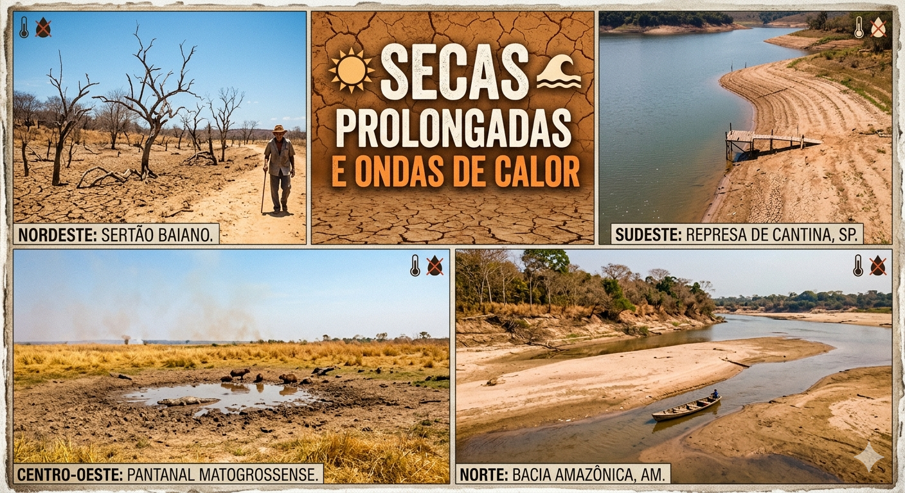
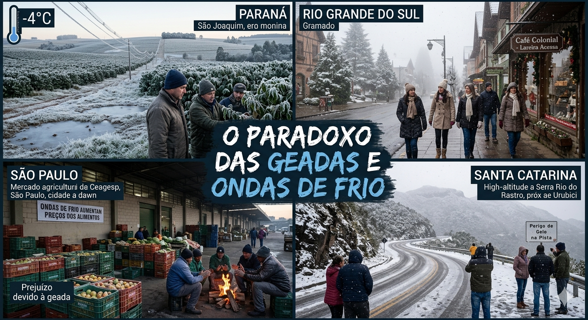
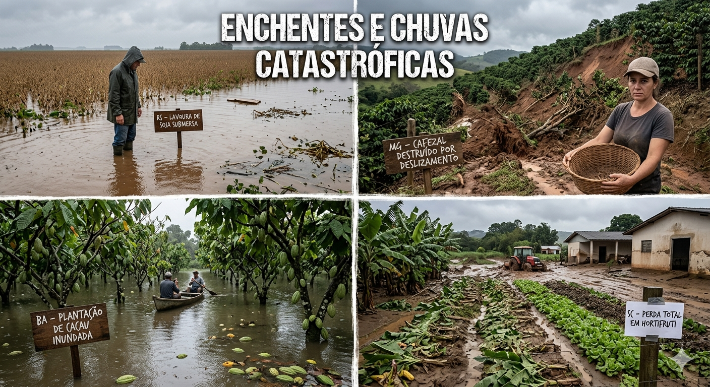
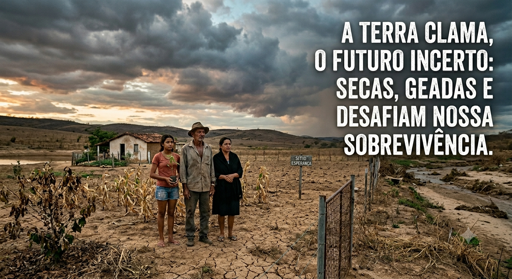

O território brasileiro vem sofrendo com uma severa irregularidade hídrica e térmica. Relatórios apontam que o país registrou sucessivas ondas de calor, com temperaturas atingindo marcas históricas (como os termômetros ultrapassando os 43°C no Sul e recordes seguidos em capitais como Rio de Janeiro e São Paulo).
Impacto Hídrico: Regiões como o Sudeste, o Nordeste e a Bacia Amazônica enfrentam déficits hídricos persistentes. Rios como o Negro, Solimões e Madeira registraram secas severas que comprometeram a navegabilidade e o abastecimento.
Quebra na Produção: O estresse térmico prolongado impactou severamente o agronegócio. Dados da FAO revelam que ondas de calor extremo provocaram uma queda de cerca de 10% na produção de soja, além de causar estresse térmico na pecuária (bovina, suína e avícola), limitando o ganho de peso e a reprodução animal.

Mesmo com a tendência global de aquecimento, a desestabilização das correntes de jato na atmosfera tem provocado anomalias térmicas inversas durante o inverno. O Brasil registrou episódios sucessivos de ondas de frio intenso, com temperaturas negativas severas nas regiões de maior altitude do Sul (chegando a marcas históricas como -7,8°C em General Carneiro, PR).
Riscos ao Produtor: A grande incerteza reside na imprevisibilidade do calendário dessas geadas. Quando ocorrem de forma tardia ou precoce, destroem lavouras de milho safrinha, hortaliças e pastagens da noite para o dia, elevando os custos operacionais e gerando picos inflacionários nos preços dos alimentos para o consumidor final.

Se por um lado falta água em alguns meses, por outro o volume de chuva de vários meses tem se concentrado em poucos dias ou horas. Esse fenômeno, intensificado pelo aumento de vapor d'água na atmosfera aquecida, gera inundações avassaladoras.
Impacto Urbano e Humano: Somente em um ano recente, os desastres associados a extremos climáticos afetaram diretamente mais de 336 mil pessoas no Brasil. Cidades como Teresópolis (RJ) e São Paulo (SP) registraram volumes acumulados em um único dia muito acima da média histórica mensal. Minas Gerais lidera o ranking de vulnerabilidade, com centenas de municípios suscetíveis a deslizamentos e enxurradas.
Prejuízos Estruturais e Agrícolas: Além da perda de vidas e do deslocamento de milhares de desabrigados, o excesso de chuvas destrói infraestruturas logísticas (estradas e pontes), impedindo o escoamento de safras. Inundações em estados como o Rio Grande do Sul abalaram fortemente culturas tradicionais, como a produção de arroz.

O impacto financeiro desses eventos atingiu patamares bilionários. Levantamentos da Fiocruz e de entidades do setor de seguros apontam que os eventos climáticos extremos geraram perdas gigantescas na economia nacional nas últimas duas décadas (com crescimento superior a 900% no número de registros desse tipo de desastre).
